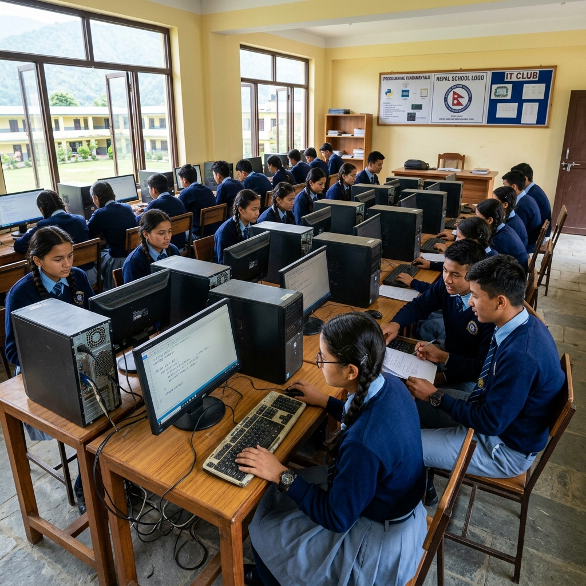
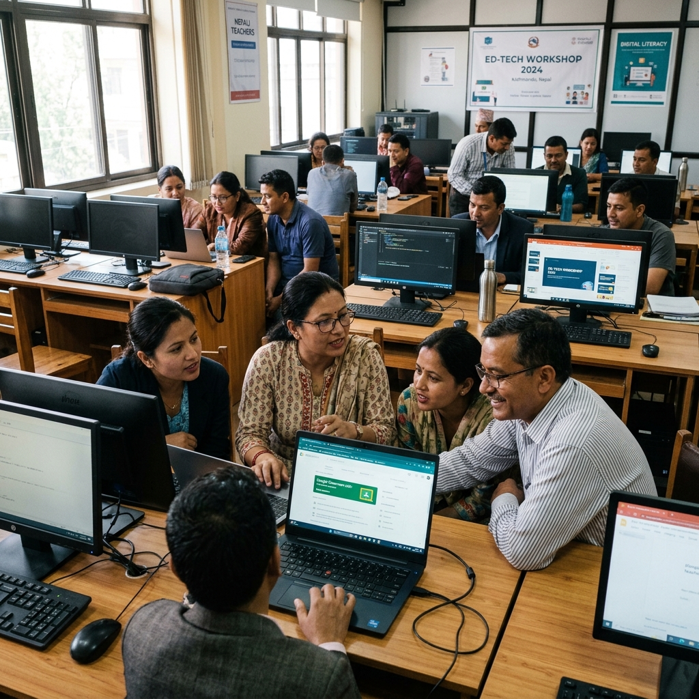
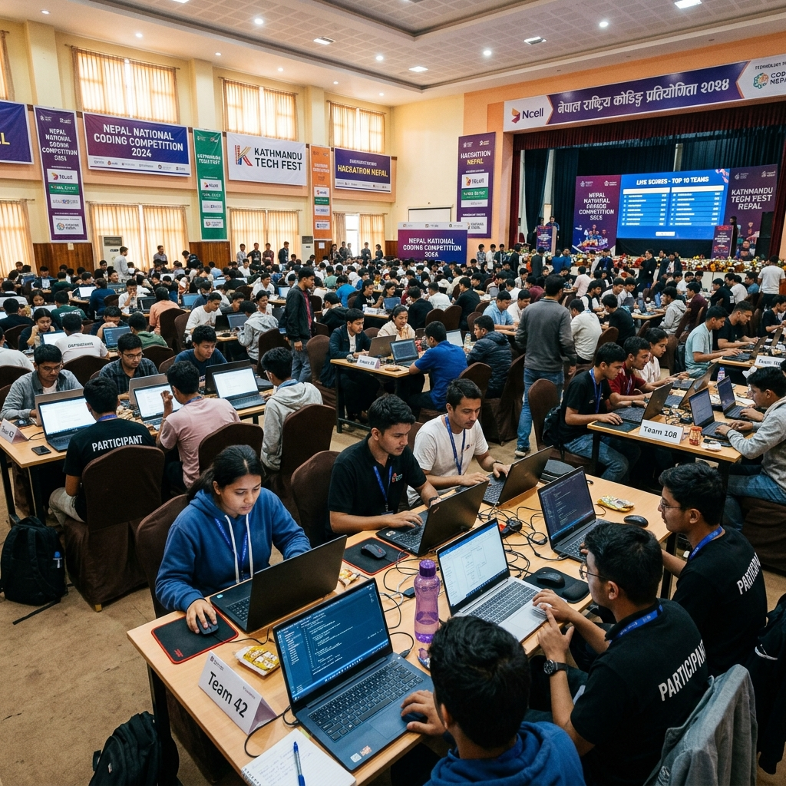

It is how and with whom.

| Level | Grades | Schools (Approx.) | Students Enrolled |
|---|---|---|---|
| Primary | 1–5 | 35,000+ | 2,800,000 |
| Lower Secondary | 6–8 | 18,000+ | 1,300,000 |
| Secondary | 9–10 | 10,826 | 680,000 |
| Higher Sec. | 11–12 | 3,500+ | 350,000 |
| Total K–12 | 1–12 | ~43,000+ | ~5,130,000 |
Nepal has 5.13 million enrolled students. A 50% access target = 2.56 million students — exactly NSA's Year 5 goal.
| Dimension | Old System (Pre-2076) | New Mandate (NCF 2076 / 2026) |
|---|---|---|
| Focus | MS Office, hardware theory | Real Python programming |
| Teaching style | Memorization | 50% practical, project-based |
| Programming | None | Python — Grade 9 & 10 |
| Assessment | Written recall exams | Practical coding + projects |
| Teacher requirements | Basic ICT literacy | Python pedagogy capability |
An entire generation graduated with computer literacy but zero coding ability.
NCF 2076 Curriculum
Real Coding Skills
Policy demands Python. Classrooms teach from books.
Less than 1 qualified prep per 3 schools.
Current tools lack pedagogical structure.
Hardware grants lost to lack of curriculum drivers.
Connectivity & language barriers compound issues.
What Scratch Is Good For: Early elementary (Grades 1-3) visual introduction to logic.
| Problem Area | Scratch Reality in Nepal Classrooms |
|---|---|
| Learning Style | Students copy blocks from books — replication, not reasoning |
| Teacher Dependency | Progress depends entirely on teacher guidance |
| Language Transition | Does not transition to Python |
| Assessment | No automated grading |
| Curriculum Alignment | Not aligned with NCF 2076 target |
Scratch is an introductory tool, not a national K-12 CS ecosystem.
| Category | Digi School | CodeMonkey |
|---|---|---|
| Student Progress Dash | No | Yes |
| Teacher/Admin Dash | No | Yes |
| Automated Grading | Basic | Full |
| Teacher Effort | High | Low |
| Learning Style | Remember & Learn | Learn by Doing |
| Specialization | Low | High |
CodeMonkey provides a scalable, measurable, and standardized ecosystem built for national rollout.
Mission: To ensure every student in Nepal has access to real coding, digital literacy, and AI education.
Sushil Budhathoki
Founder & CEO
Diperson Shrestha
Co-Founder & Head of Academics


Teacher Certification
National Competitions
Classroom Deployment
| Requirement | MoEST Role | NSA Role |
|---|---|---|
| Mandate | Policy/Curriculum creation | Implementation & Infrastructure |
| Access | School & Teacher access | Training, certification, ongoing support |
| Funding | Budget allocation | Licenses, Software, Curriculum package |
| Scale | National authority | District level execution capability |
| Data | Requires 50% practical stat | Automated generation of scoring reports |
Real code execution required. Instant visual feedback.
Game narrative avoids cognitive overload. Built on engagement mechanics.
Blocks → Text → Python → AI. Zero drop-off during transitions.
| Task | Without CodeMonkey | With CodeMonkey |
|---|---|---|
| Lesson planning | 2–3 hours/week | 0 — pre-built |
| Grading tasks | 30 min/student | Automated |
| Class progress | Manual review | Real-time dashboard |
| Admin reports | Manual compilation | Automated reports |
| Coding knowledge? | Yes | No |
A teacher with zero coding background can run a Python class from Day 1 after NSA's 3-day certification.
| Nepal CDC Topic (Gr 9, Unit 7) | CodeMonkey Lesson | Match |
|---|---|---|
| Algorithm & Flowchart | Lesson 2 – Sequencing | Full |
| Python Intro, Basic Syntax | Lesson 1 – Introduction | Full |
| Variables & Data Types | Lesson 6 – Variables | Full |
| Arithmetic & Logical Operators | Lessons 6, 9, 10, 11 | Full |
| If / If-Else / Elif Conditions | Lessons 7, 8, 14 | Full |
| For Loop & While Loop | Lessons 4, 5, 9 | Full |
| Lists & Dictionaries | Lessons 3, 16 | Full |
In 100+ countries, 350,000 teachers — most without prior coding backgrounds — have successfully run CodeMonkey classes.
This is documented at scale, not a theoretical capability.
NSA delivers a structured, grade-by-grade curriculum from Grade 1 to Grade 12.
Foundation Layer
Blocks, Sequencing, Intro to Text Coding
Intermediate Layer
CoffeeScript, Real Python, Data Science Intro
Advanced Layer
AI, Chatbots, ML Game Engines
| Grade | Course | Structure |
|---|---|---|
| 1 | CodeMonkey Jr. | Sequencing & Loops + Digital Use |
| 2 | CodeMonkey Jr. | Conditional Loops + Procedures |
| 3 | Beaver Achiever | Structured problem-solving |
| 4 | Beaver Achiever | Digital Citizenship inclusion |
| 5 | Coding Adventure I | Text Coding Intro |
| 6 | Coding Adventure II | Challenge Builder mastery |
| Grade | Course | Key Focus |
|---|---|---|
| 7 | Coding Adventure III | Mastery of text challenges |
| 8 | Data Science | Data literacy fundamentals |
| 9 | Banana Tales (Python I) | 100% NCF 2076 Python |
| 10 | Banana Tales (Python II) | Python Advanced + AI Intro |
Grade 9 and 10 directly fulfill Nepal's new mandatory CS curriculum targets.
| Grade | Course | Outcome Focus |
|---|---|---|
| 11 | Coding Chatbot | Applied AI / Natural Language |
| 12 | Artificial Intelligence | Design & build AI games |
Design Philosophy: Students become creators, not consumers of AI — matching Nepal's AI Policy goals.
255+ Total Lessons spanning K-12.
Five concurrent channels designed to work within existing government structures and budgets.
District Hub Partner
Teacher Bank Partner
Curriculum Endorsement
Book Free Friday
Pilot MoU
Model E creates proof. Models A, B, C, D create scale.
Converting Hardware Grants Into Learning Outcomes
Making the Teacher Bank Genuinely Effective
Official MoEST Resource Listing
Book Free Friday Track
Proof Before Scale
| Year | Students Reached | Cumulative Schools | Milestone |
|---|---|---|---|
| Year 1 | 25,000 | 50 | MoU signed; pilots live |
| Year 2 | 100,000 | 250 | Teacher bank operational |
| Year 3 | 500,000 | 1,250 | CDC endorsement |
| Year 4 | 1,000,000 | 3,750 | 7 Provinces covered |
| Year 5 | 2,500,000 | 8,750 | 50% of K-12 Students |
NSA frameworks scale within existing government budget structures.
| Year | Teachers Trained | Cumulative |
|---|---|---|
| Year 1 | 200 | 200 |
| Year 2 | 800 | 1,000 |
| Year 3 | 2,500 | 3,500 |
| Year 4 | 5,000 | 8,500 |
| Year 5 | 10,000 | 18,500 |
| Students with real access | < 50,000 estimated |
| Schools with structured CS | < 500 |
| Teachers certified in Python | < 200 |
| Gr 9-10 writing real Python | Near zero in community schools |
| Gov endorsed platform | None |
The curriculum mandates Python for 680,000 secondary students. The delivery infrastructure does not exist.
| Students with coding/CS access | 2,500,000 (50% of K-12) |
| Schools with structured delivery | 8,750+ |
| Teachers certified in pedagogy | 18,500+ |
| Gr 9-10 writing real Python | 680,000 (100% target) |
| Gov endorsed platform | CodeMonkey official resource |
A nationally integrated CS education system with documented outcomes.
Curriculum on paper only
< 200 capable teachers
Students copy from book
No government data tracked
Rural access near zero
Classroom-level execution
18,500+ certified teachers
Write, run, debug code
Quarterly automated MoEST reports
3,000+ rural schools connected
Trained domestic talent pool directly curbs IT brain drain and aids export growth.
Digital rural/urban divide shrinks; transparent STEM gender participation metrics.
True execution of 2076 mandates and practical evaluation goals.
Nepal joins global standards, regional validation via CS capabilities.
| MoEST Problem | NSA Solution |
|---|---|
| Only 3,203 S&T teachers | 3-day cert makes teachers Day-1 ready. |
| Python taught from textbook | Immediate real code execution inside platform. |
| 50% practical assessment gap | Dashboards auto-feed reports to MoEST metrics. |
| NPR 2.5m hardware idle | NSA turns hardware into active learning centers. |
| Rural connectivity issues | Offline modes + field support solve isolation. |
This is not innovation for innovation's sake. Nepal does not need to pilot what's already proven worldwide. We just execute it here.
Alignment: 100% Grade 9 Python.
Teachers: Zero coding experience required.
Experience: Game-based, pure execution logic.
Assessment: MoEST metrics automated.
Speed: School deployment in 48h.
Scale: Up to 2.5m students by Y5.
Finance: Fits within current 2.5m grants.
Credibility: 45m global users.
MoU Partnership
NSA designated as certified implementation partner for Gr 9-10 Python.
Tech Hub Designation
Designate 10 district grant schools as immediate Model A pilots for Year 1.
Endorsement
Initiate CDC review to list CodeMonkey comprehensively as a resource.
All three can be initiated simultaneously. First schools operational within 30 days of MoU signing.
"Coding education is no longer optional.
It is the new language of the future."
CodeMonkey is the vehicle.
NSA is the driver.
MoEST is the highway.